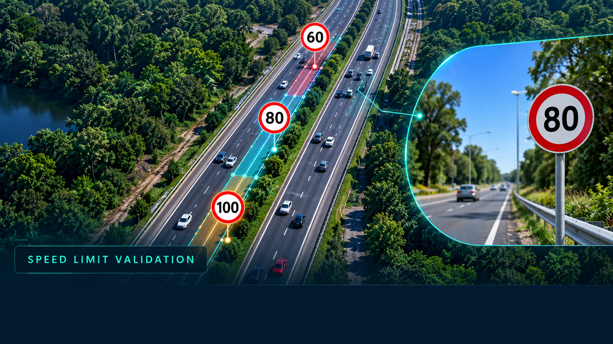
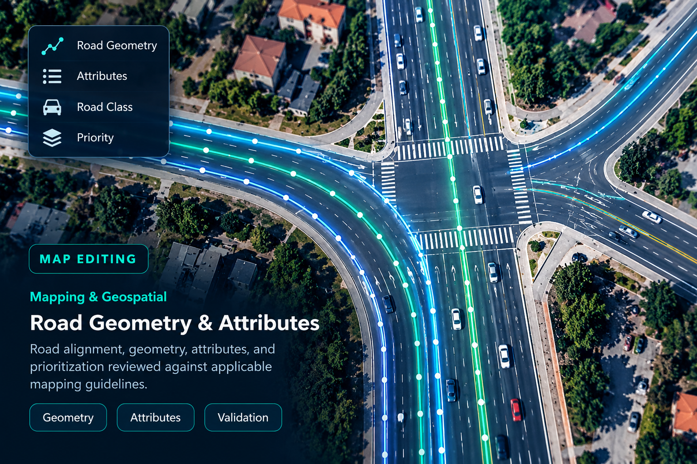
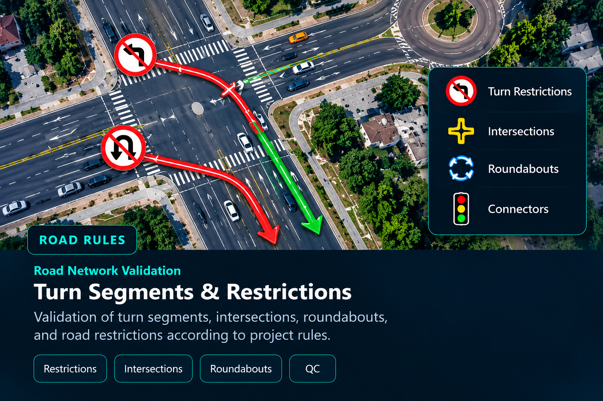

Data Accuracy
Careful validation of road attributes and structured data.
MAPPING · DATA QUALITY · QA/QC
Experienced in map data curation, speed-limit validation, road attributes, geospatial data quality, and quality control. I focus on accuracy, consistency, and reliable location data.
GET TO KNOW ME
A detail-oriented professional who values data accuracy, process consistency, and continuous improvement.
I have 4.3 years of professional experience at Wipro Limited in Mapping & Data Management. My work involved analysing road networks, curating speed-limit information, validating map attributes, and reviewing data quality against project guidelines.
I have experience with quality control workflows, identifying mapping errors, reviewing work for accuracy, and maintaining process reports. I am interested in applying these transferable skills to Mapping, GIS, Data Quality, Data Validation, QA/QC, Content Quality, and AI/ML Data Operations roles.
My MBA in Finance also supports my analytical approach, attention to detail, and understanding of structured data.
Careful validation of road attributes and structured data.
Reviewing outputs, identifying errors, and following guidelines.
Using evidence, imagery, and process rules to assess data.
Maintaining consistency, documentation, and reporting.
PROFESSIONAL JOURNEY
Professional experience in mapping, data curation, and quality validation.
Wipro Limited
Worked on mapping data curation and validation, with a focus on road-network information, speed-limit data, and quality assurance workflows.
WHAT I BRING
Core capabilities relevant to mapping and transferable quality roles.
Roles I'm interested in
SELECTED WORK AREAS
Examples of mapping concepts and data-curation areas related to my professional experience.

DATA CURATION
Evaluating speed-limit information using available evidence, road context, and applicable mapping guidelines.

ROAD NETWORKS
Reviewing road alignment, network connectivity, road classifications, and related map attributes.

MAP QUALITY
Checking road restrictions, intersections, connectors, and network details for consistency with mapping rules.
Work samples are for portfolio illustration and are not a representation of proprietary client data.
ACADEMIC BACKGROUND
Academic qualifications supporting my analytical and professional skills.
2015
Finance
GBR UG & PG College, Anaparthi
2013
Commerce
Government Autonomous College, Rajahmundry
LET'S CONNECT
I'm interested in opportunities across mapping, data quality, QA/QC, data validation, and data operations. Feel free to contact me regarding relevant opportunities.
Get in Touch ↗